来源：https://hez86518tv.feishu.cn/docx/TnWYdJIU9obuiOx1YpbcU0ZWnLe
| 版本 | 更新描述 | 作者 | 更新日期 |
|---|---|---|---|
| V1.0 | 新建文档 | 科学羊 | 2024-01-15 |
| V1.1 | 增加云端玩法，家里没有电脑也可以玩 | 科学羊 | 2025-02-14 |
| V1.2 | 增加云端扫码登陆异常的处理方法 | 科学羊 | 2025-02-24 |
大家好，我是科学羊，公众号专栏日更作者，知名报社签约编辑、海外内容创业实践者、游戏视频创作者。
马上就要春节放假了，今天在临放假之前给大家分享一个独一无二，且奇特的赛道和玩法，希望大家在假期有时间可以去研究一波。
首先感谢平台和各位星友的支持，这也是我第一次公开写关于写「赛道赚钱相关」的帖子，关于这个赛道，基本研究了大半年的时间，从产品技术制作再到海外运营最后上线一条龙打通。毫无夸张的说我是国内开放这个赛道并为做出最全教程的第一人了。目前已有十几余跟着我在做，如果大家喜欢，欢迎入局。
注意⚠️本次所分享的赛道可能和各位认知的稍微有点偏差与门槛，主要适合兴趣爱好者与打造原创创作的人群。
也就是说这个赛道有比较高门槛，难度大，几乎不太可能做纯搬运，靠的是实实在在的打磨与发自内心的喜欢。但是一旦真正做了回报也是高收益的。
好，废话不多，我们直接看内容。
赛道面向群体：海外
面向平台：油管 + TikTok
创作内容：游戏视频
游戏名称：BeamNG.driver，国内人称「车祸模拟器」
视频方式：长视频+short 、以及TK 中视频
面向群体：儿童、青少年、爱车的人士
变现方式：广告收益、奖励机制、国内视频制作接单
需要涉及领域：
1、热爱游戏的玩家，有基本的单机游戏操作经验
2、懂游戏模组
3、游戏脚本，懂编程（非不要）
4、3D建模&懂Blender建模，比如人物建模+汽车建模 + 以及动画制作
5、懂得运镜的经验，有导演思维
6、基本的视频剪辑技术
详细描述：这是一个基于原游戏场景与画面自建内容的游戏视频制作赛道。白话讲就是把你所玩的游戏进行录制，然后做成视频，并增加故事而呈现给观众。
以下是关于游戏的详细介绍：
赛道名称：BeamNG.driver 车祸模拟
游戏介绍：
BeamNG.drive 是一款以高度真实物理模拟为特色的车辆驾驶游戏。它以逼真的车辆物理和碰撞效果而闻名，提供了一个开放的沙盒环境，允许玩家自由驾驶、测试车辆以及进行各种实验。
下面我给大家列举一下关于这个赛道的流量
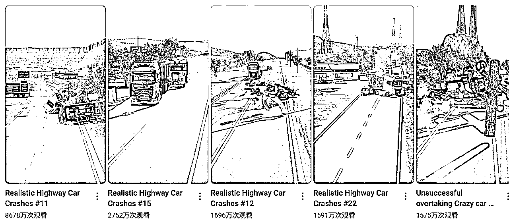
这还是2025年刚起号发的
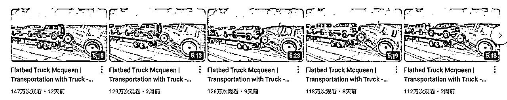
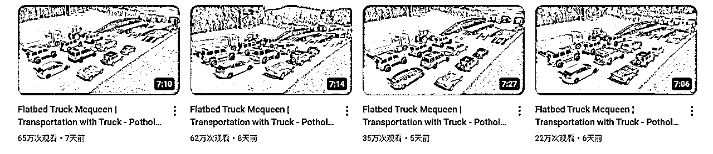
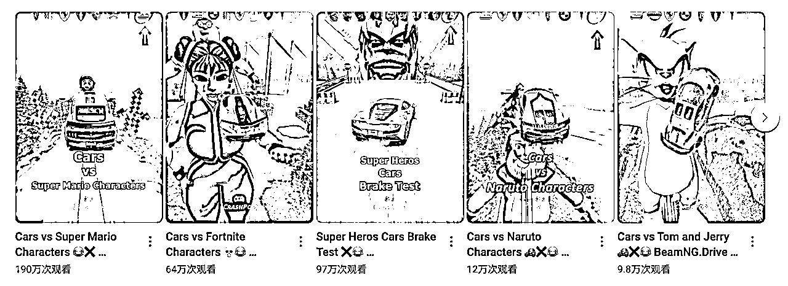
简介：以模仿电影场景来在游戏里复现，这种基本都能达到百万级播放，也是这个游戏的至高天花板。
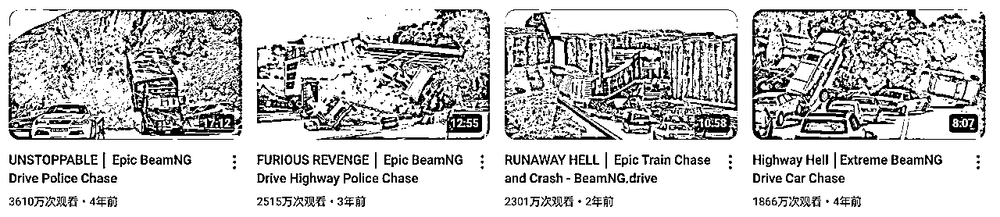
简介：车祸碰撞测试，这类视频在TK流量更高
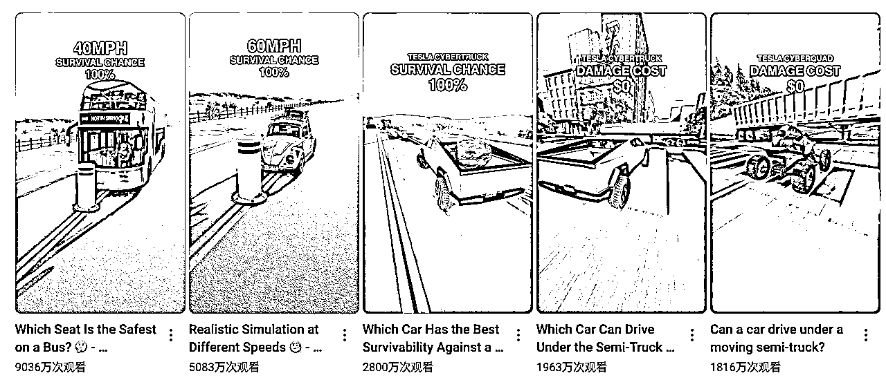
适合做小朋友赛道的人群。
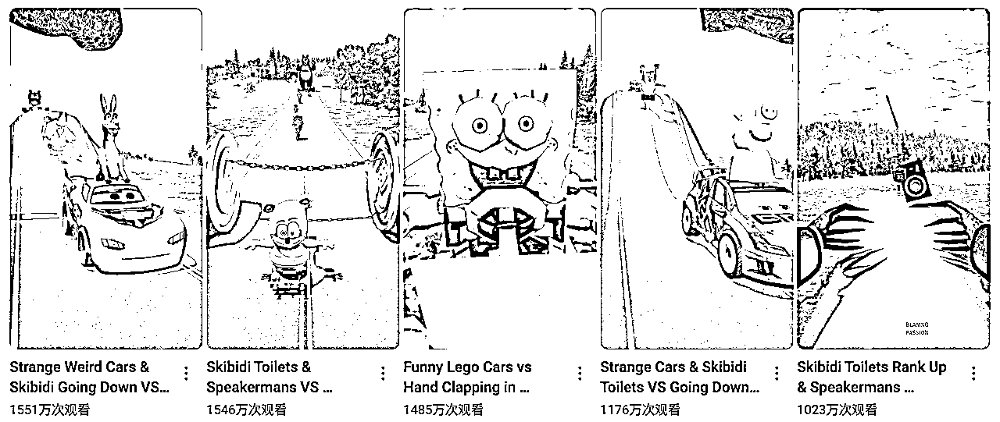
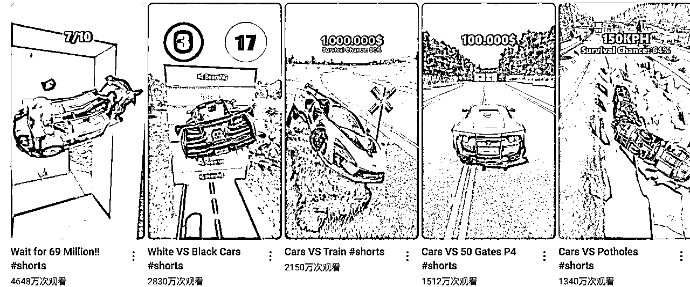
简介：基本都是亿万级的播放，受众群体广，制作也简单
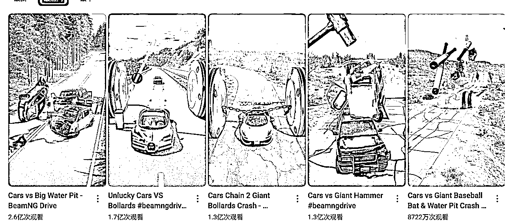
我之前接过一个汽车导演的单子，就是通过车祸模拟器给他制作一则广告，1min的视频大概500人民币，大家可以自行发挥。
下面这个是一个案例。
这个赛道以我的理解，月入几万都是没什么问题的，可能还不止这个数。大家可以自行去搜索，这里不谈太具体。上几个月我开始带人入局这个赛道一个月就可达高爆收益。视频单价大概平均是1.1以上。
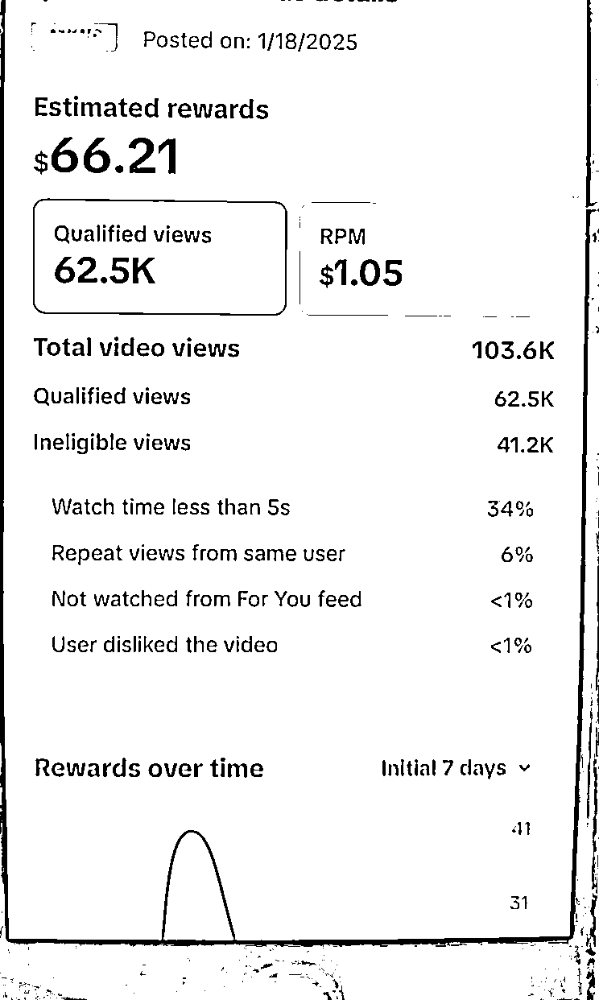
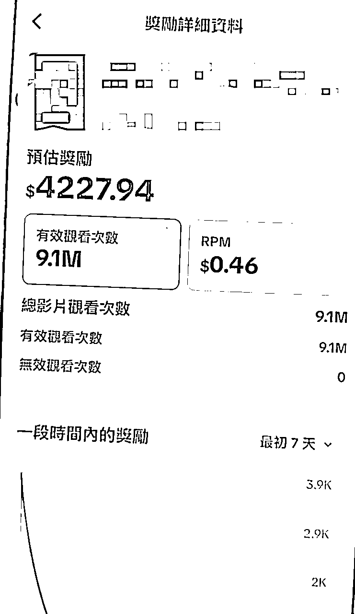
油管收益参考
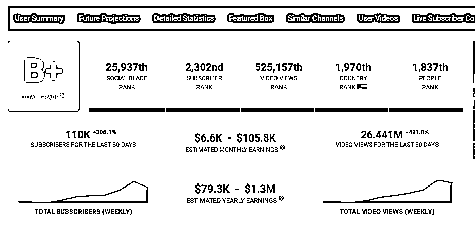
关于这个游戏详细视频大家可以看B站看我的课程：
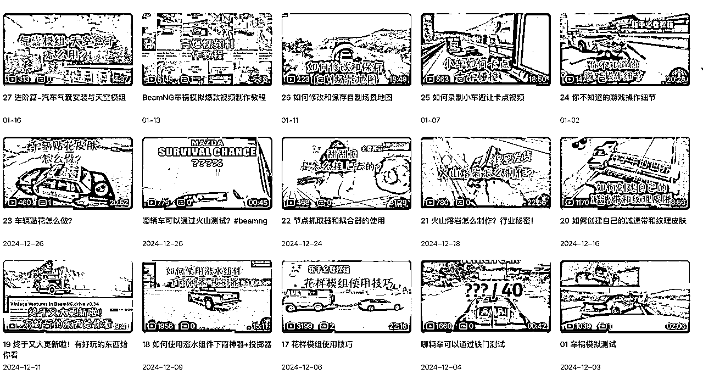
https://space.bilibili.com/301162993?spm_id_from=333.1007.0.0
接下来我给大家放出基础部分的教程，大家抽空先去了解一下，做这个赛道必须要懂游戏，否则一切都是免谈。即使你搬运了，海外平台也不会给你推流。
所以我的建议就是老老实实去学习，既能玩游戏，又能赚钱，多好！
这个游戏如果有经验玩单机游戏的人差不多2～3天就能掌握。
车祸模拟器官网：https://www.beamng.com/game/cn/
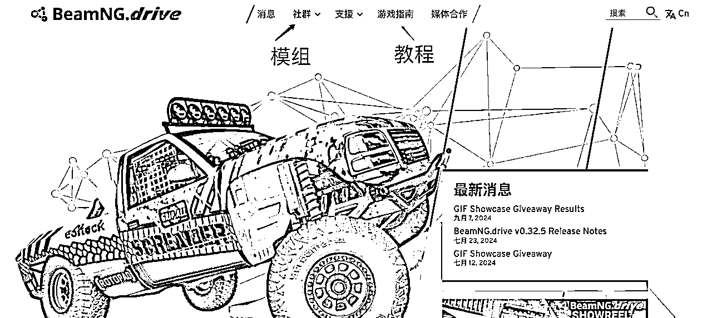
注意⚠️：本游戏最好推荐 32G内存
推荐配置
普通设置为1080p
操作系统: Windows 10 64 Bit
处理器: AMD Ryzen 7 1700 3.0Ghz / Intel Core i7-6700 3.4Ghz (或更好)
内存: 32 GB RAM
显卡: AMD R9 290 / Nvidia GeForce GTX 970
DirectX 版本: 11
存储空间：50GB 可用空间
附加说明： 安装游戏模组会增加所需存储空间。建议使用游戏手柄。
最低配置
最低设置为720p
操作系统: Windows 7 Service Pack 1 64-bit
处理器: AMD FX 6300 3.5Ghz / Intel Core i3-6300 3.8Ghz
内存: 16GB RAM
显卡: Radeon HD 7750 / Nvidia GeForce GTX 550 Ti
DirectX 版本: 11
存储空间: 45GB 可用空间
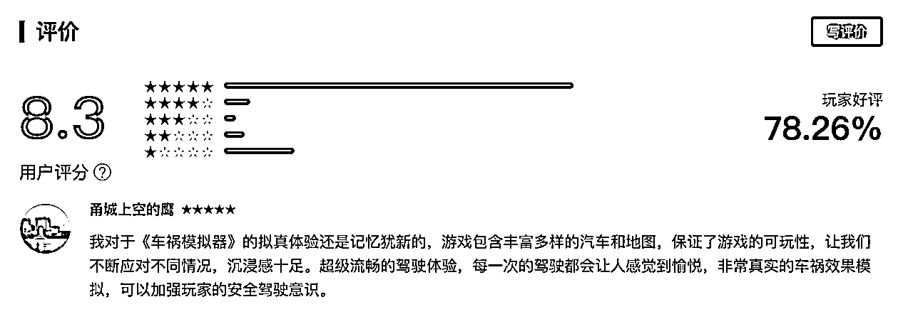
建议在Steam平台下载

下载好之后点击运行即可！这个游戏是付费游戏 ¥73.60（建议买正版）
说明：为了增加游戏的可玩性，最好能自行下载模组进行设计！
https://www.modfans.cc/
这个模组网站主要是下载常见的BeanNG 车具，有些是付费的，我自己买过一些，效果还不错。
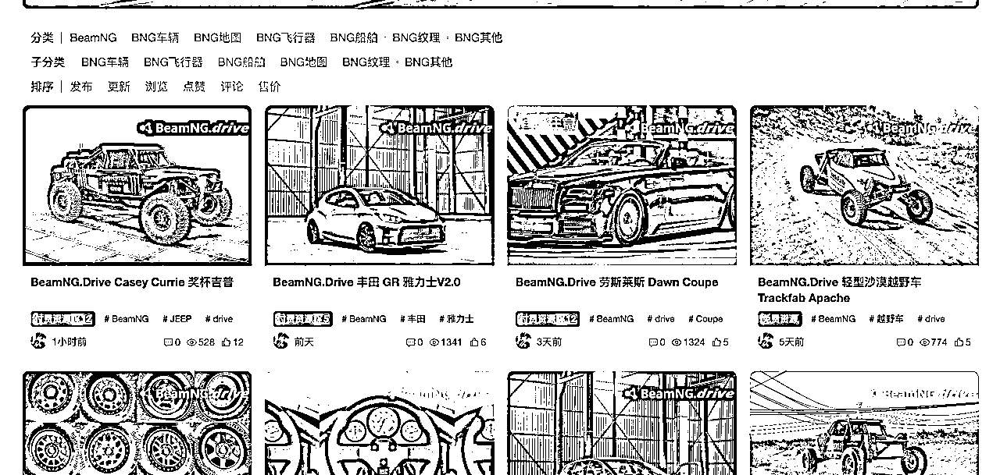
https://www.beamng.com/resources/
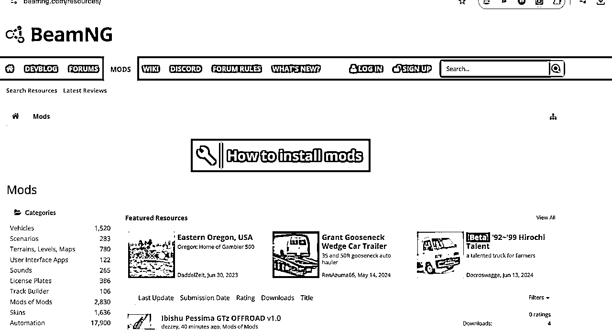
https://www.patreon.com/surski57/shop
https://www.modland.net/beamng.drive-mods
https://www.worldofmods.com/beamng/maps/
安装模组的方法有两种，第一种是直接在游戏界面里直接下载安装，第二种是通过在第三方网站下载的模组手动安装。
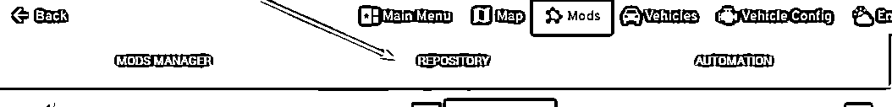
Step1：下载自己想要的模组，一般是一个zip文件
Step2：打开游戏根目录，找到mods的文件夹，然后直接把zip拖进去即可，如果没有mods文件夹，自己新建一个即可。
警告⚠️：有些模组可能有损坏的情况，自行检查
参考资料：官方也给了一个详细的教程，请查阅：
How to install mods
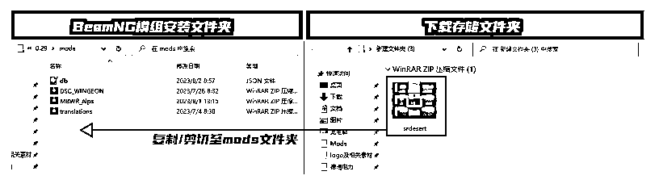
如果没有家里电脑或者配置不够怎么办？
大家可以参考这个视频：能玩《悟空》的赛博网吧？海马云电脑/网易云游戏/腾讯Start云游戏/顺网云电脑/ToDesk云电脑横评
云端电脑访问：https://pc.todesk.com/
第一步：下载个人版
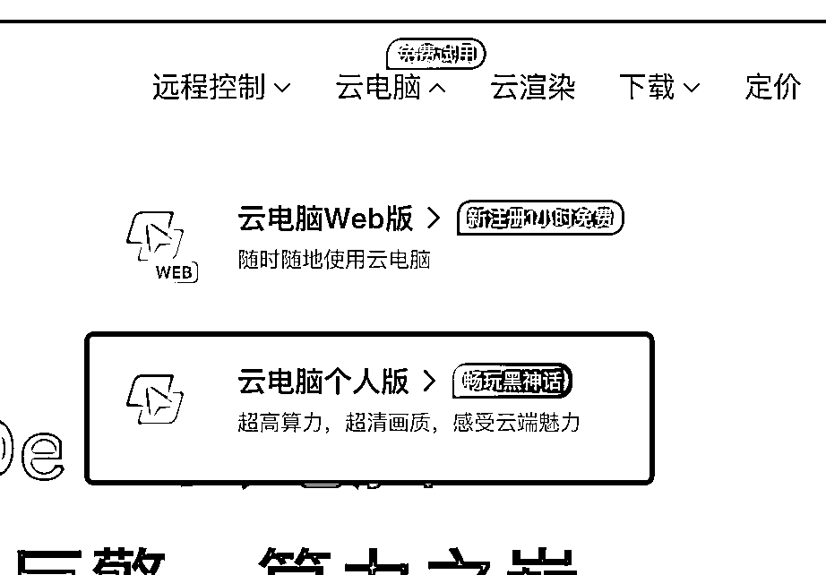
第二步：选择配置，这里如果大家录制的简单剧情，就可以选择3060，如果录制的比较复杂，比如十几辆车那种就选择4070，套餐建议用包时。
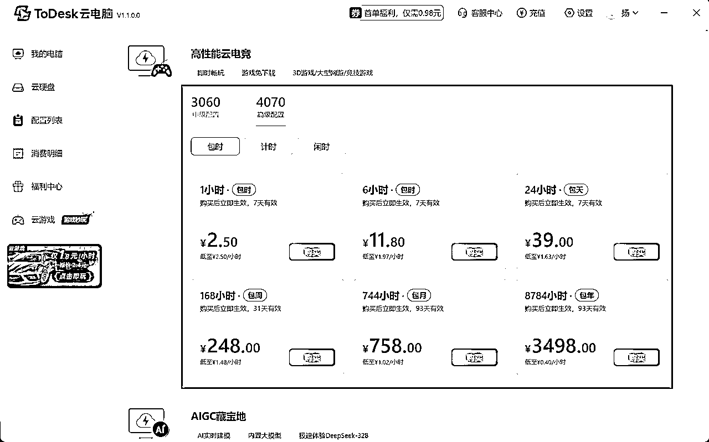
第三步：进入购买的云端电脑之后就下载必要的软件
一般，云端电脑已经有Steam了，你只需要下载BeamNG游戏即可。
录制屏幕建议用自己本地的即可！
测评；
我看了下学员在云端录制的视频和本地的几乎一毛一样，真是狠人！
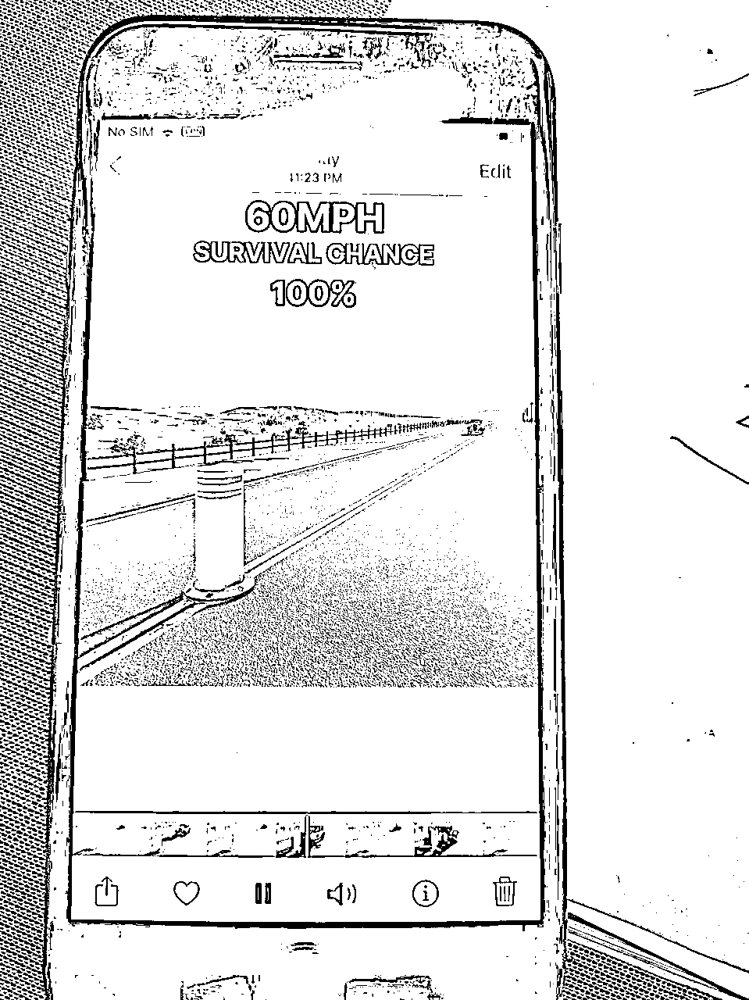
注意事项：如果遇到过云电脑登录不了steam的情况，
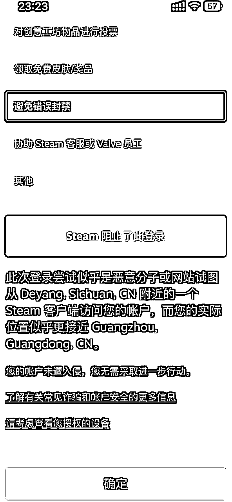
这里注意，扫码之后，手机上就能看到这台云电脑要登录的位置。看清楚，然后做选择题的时候选对。
如果还是解决不了，可以参考：https://www.bilibili.com/video/BV1AXSuYAEd7/?vd_source=42b4fec78bfbc6c161a4d8f2f68d2a57
最后，我再啰嗦下，这个赛道如果打算要做需要花费一些时间和精力，如果大家感兴趣，可以入局。会了不难，熟悉了也就变得简单的。
最后，祝大家新春快乐～